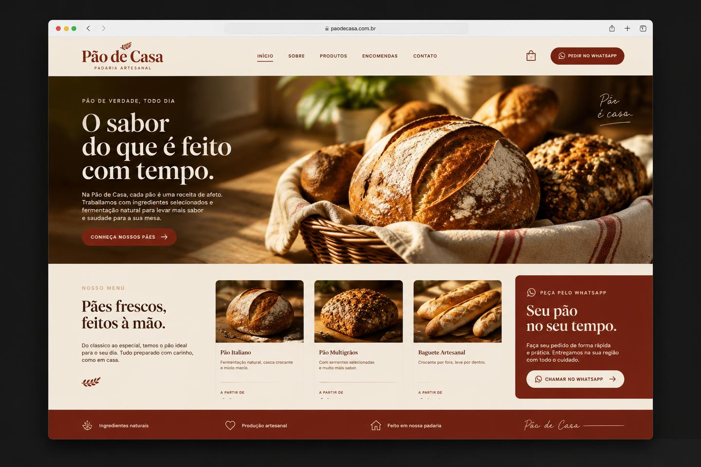
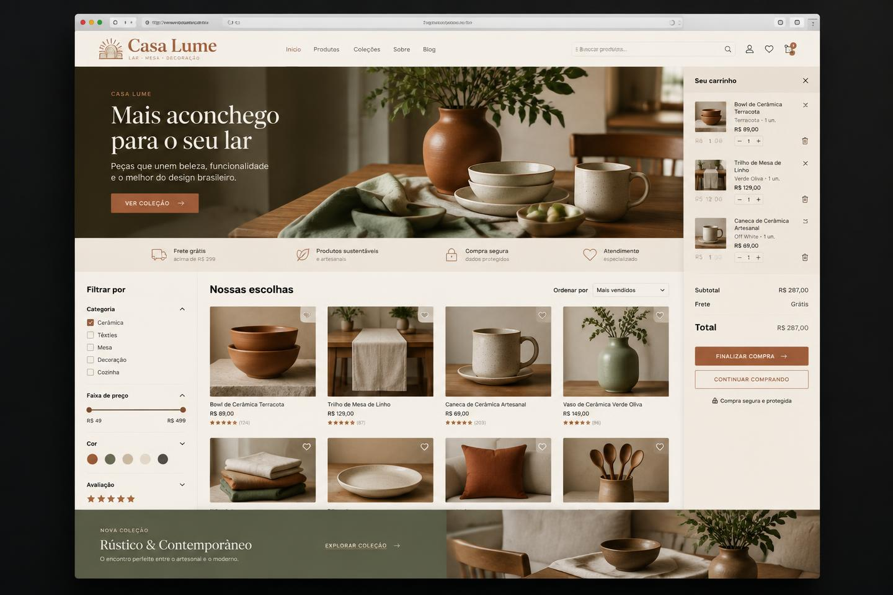

01Advocacia
Alencar & Prado
Presença digital sóbria para um escritório que precisa transmitir confiança desde o primeiro contato.
- Site institucional
- Áreas de atuação
- Contato estratégico
Projeto demonstrativo · conceitual
Web design · Portfólio comercial
Projetos selecionados
Cada negócio pede uma linguagem própria. O cuidado com clareza, intenção e acabamento permanece.
Presença digital sóbria para um escritório que precisa transmitir confiança desde o primeiro contato.
Projeto demonstrativo · conceitual

Uma vitrine acolhedora que valoriza o produto, apresenta o cardápio e encurta o caminho até o pedido.
Projeto demonstrativo · conceitual

E-commerce editorial para tornar a descoberta de produtos simples, desejável e pronta para converter.
Projeto demonstrativo · conceitual
Meu trabalho
Cada projeto nasce do encontro entre posicionamento, conteúdo e design. O resultado é uma presença digital clara, memorável e preparada para representar o seu negócio.
Seu próximo projeto começa aqui
Troque os links abaixo pelos seus canais e transforme esta vitrine no ponto de partida para novas conversas.